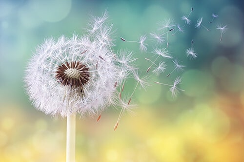

"A vida, ela mesma, fica um pouco mais além das coisas que falamos sobre ela.
A vida é muito mais que a ciência.
"Ciência é uma coisa entre outras, que empregamos na aventura de viver, que é a única coisa que importa. É por isto, além da ciência, é preciso a “sapiência”, ciência saborosa, que tem a ver com a arte de viver. Porque toda a ciência seria inútil se, por detrás de tudo aquilo que faz os homens conhecer, eles não se tornassem mais sábios, mais tolerantes, mais mansos, mais felizes, mais bonitos..."
A celebração de mais um ano de vida é a celebração de um desfazer, um tempo que deixou de ser, não mais existe. Fósforo que foi riscado. Nunca mais acenderá. Daí a profunda sabedoria do ritual de soprar as velas em festa de aniversário. Se uma vela acesa é símbolo de vida, uma vez apagada ela se torna símbolo de morte.
"A vida, ela mesma, fica um pouco mais além das coisas que falamos sobre ela.
A vida é muito mais que a ciência.
"A vida, ela mesma, fica um pouco mais além das coisas que falamos sobre ela.
A vida é muito mais que a ciência.
Rubem Alves